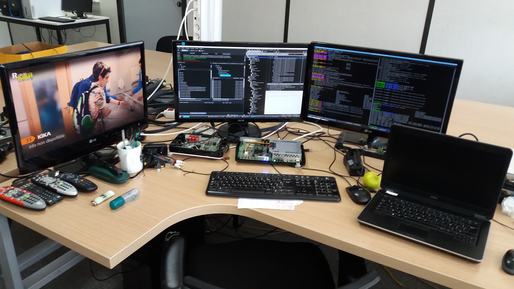
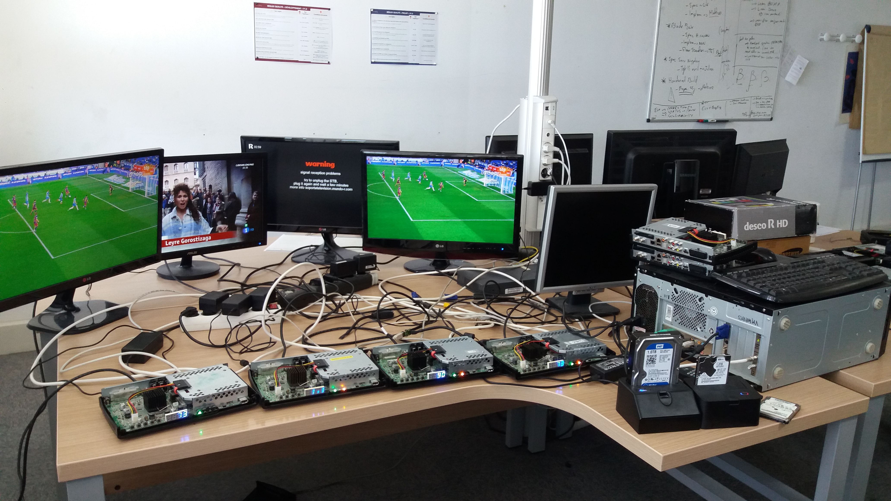
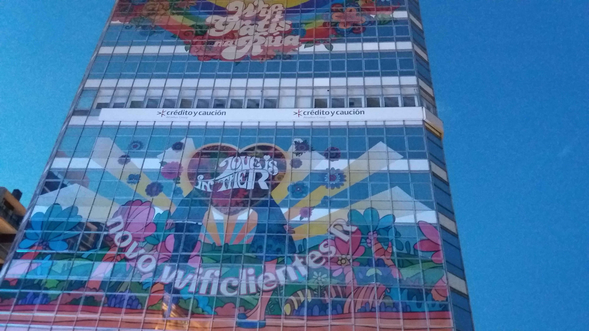

R Mundo gallery
Merci de visiter cette page ! Elle rassemble quelques photographies que j'ai pu prendre lorsque je travaillais sur le projet R-Mundo...
◂ Retour au CV




Merci à @mccormack pour le code source de la gallerie.